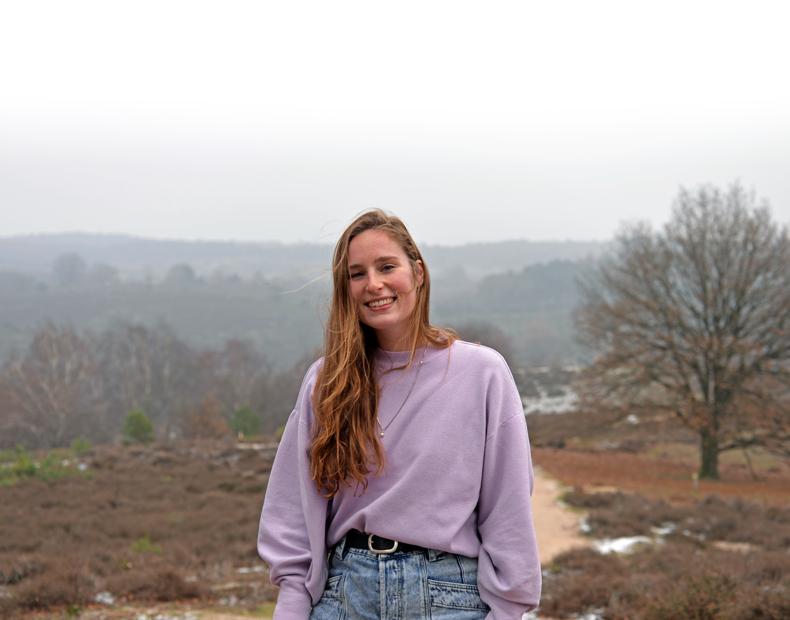
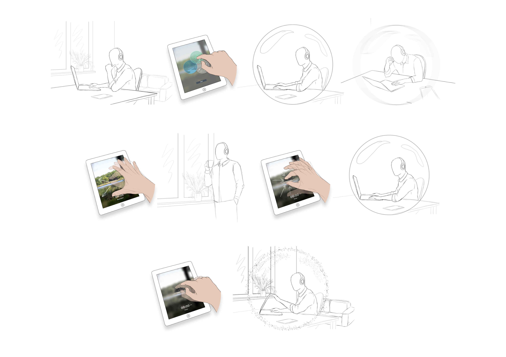

2023 – Present
Market Intelligence / UX Analyst
XXX

I graduated from Eindhoven University of Technology with master’s degree in Industrial Design . During my studies, I built a foundation in product and experience design and learned to combine creative exploration with a research-driven approach.
Today, I bring over four years of design experience in multidisciplinary and international environments, contributing to the development of early-stage ideas into commercially relevant products.
My approach is creative, human-centred, and evidence-based. I bring a broad practical toolkit across design thinking, human-centred research, and growth methods. I enjoy translating data into actionable insights and tangible concepts that help organizations grow alongside their users and markets.
2023 – Present
XXX
2022 – 2023
XXX
2022
XXX
2020 – 2022
XXX
2015 – 2019
XXX
The Home Office Sound Zone is a headphone-based spatial soundscape system designed to help young professional knowledge workers mentally separate work from home. My master thesis explored how spatial audio and nature-based soundscapes could support psychological detachment, recovery, and focus within the home office environment.
Read more
Here you can add creative explorations, visual work, experiments, or personal projects.